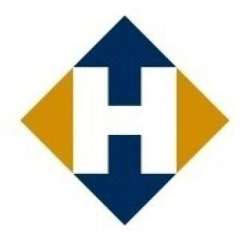

Trade Mark Journal No.2025/037 12 September 2025
WO0000001870260 (6,7,35)
Office of origin: Benelux Office for Intellectual Property (BOIP)
Date of International Registration:15 April 2025
Date of designation in the UK:
15 April 2025

The mark contains the colours, gold-coloured, blue and white.
International priority date claimed: 21 January 2025
(Benelux Office for Intellectual Property (BOIP))
(1518085)
- Class 6
- Non-electrical metallic cables and wires and their components not included in other classes including steel wire end connectors, sockets, fork and bracket sockets; the aforementioned goods for the steel cable and crane industry.
- Class 7
- Hoisting and lifting equipment; parts of cranes not included in other classes including crane blocks, hoist blocks, swivels and balancers.
- Class 35
- Advertising; business management; business administration; clerical services; organizing trade fairs and exhibitions for commercial purposes; mediating and advising on commercial matters in the purchase and trading of non-electrical metallic cables and wires and their components not included in other classes including steel wire end connectors, sockets, fork and bracket sockets, the aforementioned goods for the steel cable and crane industry, hoisting and lifting equipment, parts of cranes not included in other classes including crane blocks, hoist blocks, swivels and balancers; import-export business services of non-electrical metallic cables and wires and their components not included in other classes including steel wire end connectors, sockets, fork and bracket sockets, the aforementioned goods for the steel cable and crane industry, hoisting and lifting equipment, parts of cranes not included in other classes including crane blocks, hoist blocks, swivels and balancers; business mediation in the purchase and sale of products for the steel cable and crane industry, including hoisting and lifting equipment, crane parts, crane blocks and lifting blocks; wholesale and retail services relating to products for the wire rope and crane industry namely hoisting and lifting equipment, crane parts, crane blocks and lifting blocks; the bringing together, for the benefit of others, of a variety of goods, of products for the wire rope and crane industry namely hoisting and lifting equipment, crane parts, crane blocks and lifting blocks, enabling consumers to easily compare and purchase those products and services.
De Haan Special Equipment B.V.
Representative: Merkenbureau Knijff & Partners B.V., Leeuwenveldseweg 12, NL-1382 LX Weesp, NETHERLANDS